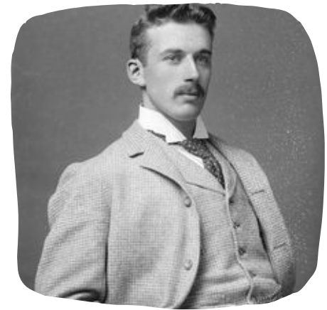

No dia 02 de Fevereiro de 1982, na cidade de Capivari (SP), nascia a primeira unidade hospitalar da Medical Group, sete anos mais tarde conhecida como MED+. Fundada por Alberto Castannhale, a rede MED+ foi criada a partir de um sonho de criança, com muita luta e dedicação, que se tornou realidade após a morte de sua mãe, Flávia Castannhale.
